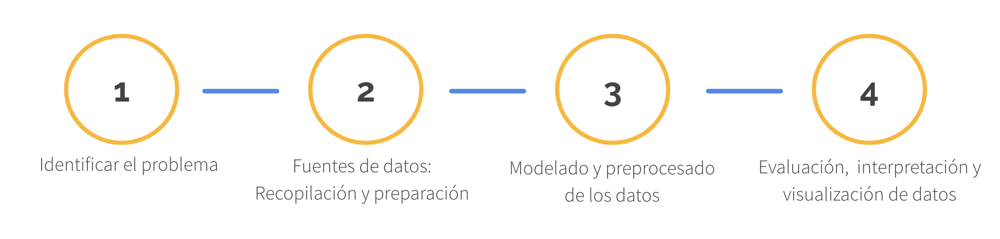

Análisis de textos a través de Twitter
por Nerea Luis @sailormerqury
Introducción
Cualquier problema de Machine Learning (data-mining, text-analysis, sentiment-analysis…) contiene las siguientes fases:

Fuentes de datos
Algunos ejemplos gratuitos de fuentes de datos estructurados y no estructurados que se pueden encontrar en Internet
https://www.google.com/publicdata/directory
https://registry.opendata.aws/
https://www.reddit.com/r/datasets/
¿Qué vamos a hacer?
La primera parte del taller consistirá en desarrollar en codigo Python este diagrama básico de obtención de datos a través de Twitter. Los datos serán tweets de la red social y los recibiremos estructurados. Después los exportaremos a un fichero CSV.

La segunda parte del taller consistirá en limpiar esos datos, trabajar con funciones básicas de Natural Language Processing y analizar el sentimiento de los tweets a través de librerías de Python como Textblob o MeaningCloud.
Requisitos
- Python 3.6 o superior
- Jupyter Notebooks (o Anaconda)
- Editor de código o IDE
Revisa tu(s) versión(es) instaladas de Python con el siguiente comando. Si tienes dos versiones diferentes instaladas, seguramente Python 3.6 esté asociado al segundo.
python --version
python3 --version
Para saber dónde está instalada tu versión de Python escribe en la Terminal:
which python
##Librerías de Python
Las librerías recomendadas para este taller son las siguientes:
- tweepy
- pandas
- csv
- nltk
- wordcloud
- textblob
- meaningCloud-python
Puedes instalarlas con
pip install <nombre libreria>
Revisa que están instaladas correctamente con el siguiente comando:
pip list